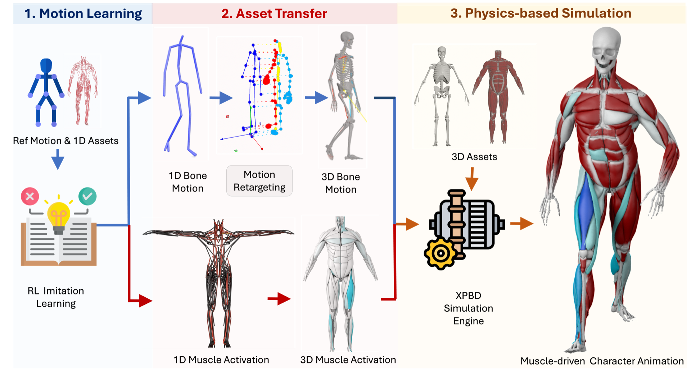
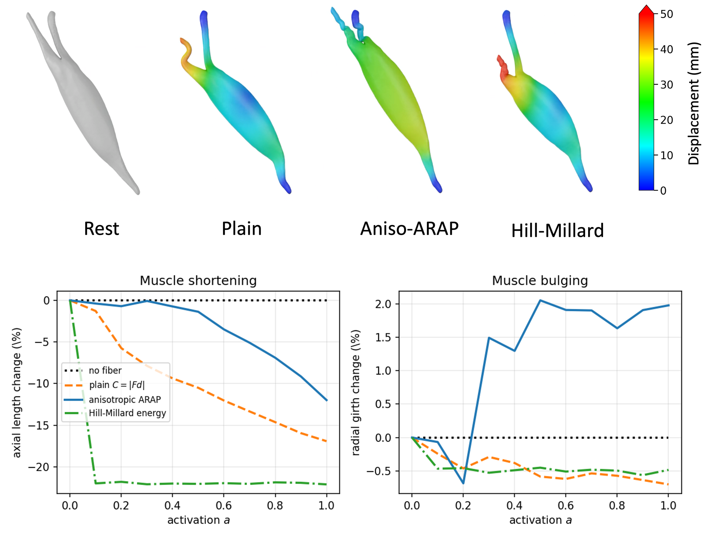
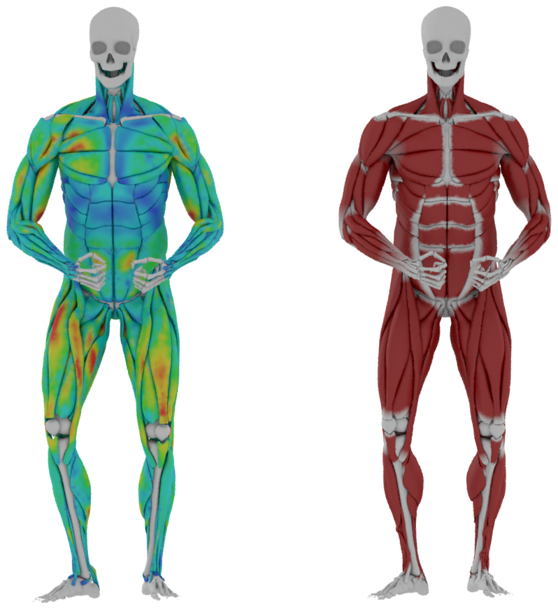
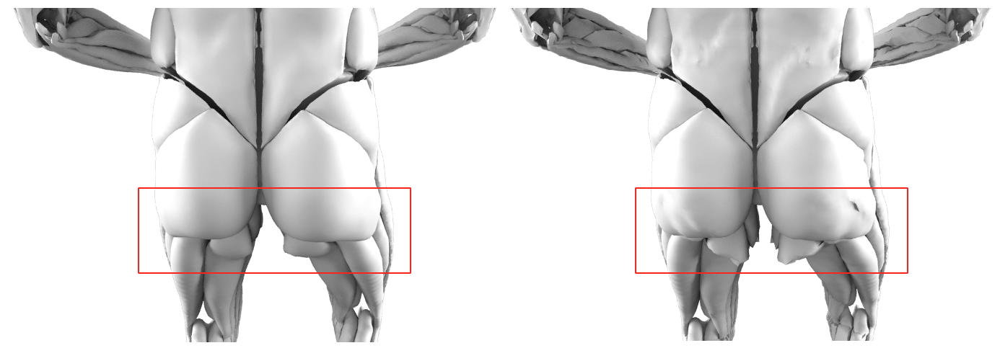
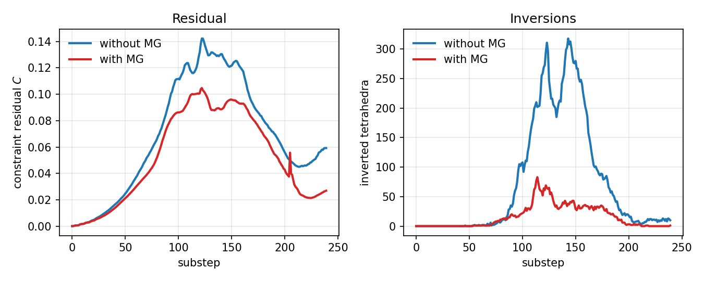
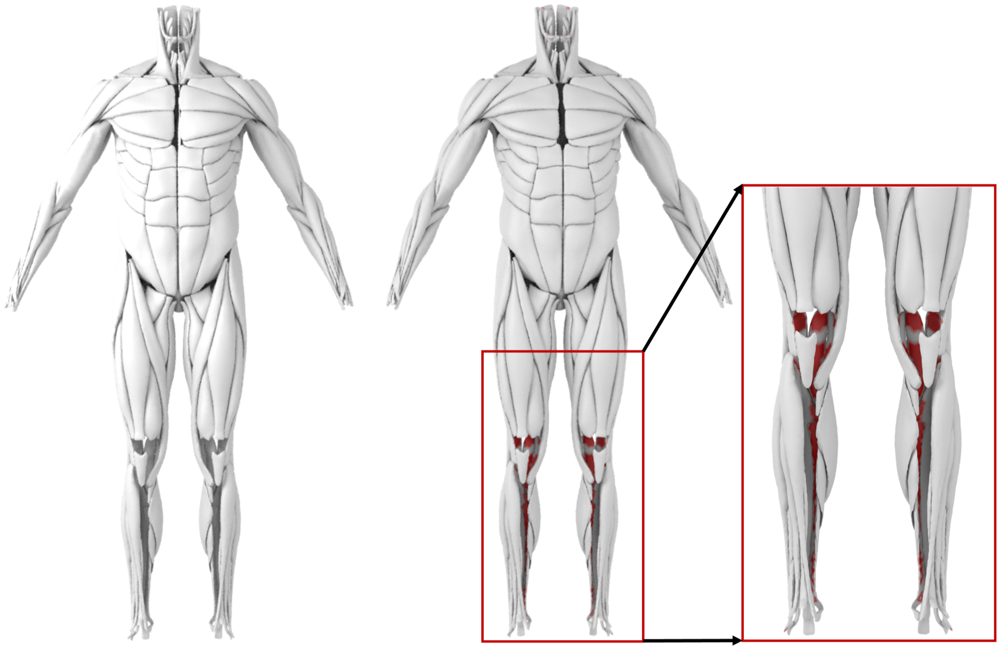

Abstract
Body deformation caused by muscle contraction and extension plays a vital role in visual realism in games and movies, yet in most 3D animation pipelines artists have to manually specify the muscle activation, which is time-consuming and lacks physical realism. To address this, we build a system in which an RL-based controller, trained on a 1D Hill-type surrogate, discovers per-muscle activations that track reference motions without manual tuning; the same Hill-type constitutive law then drives a 3D volumetric simulator to produce realistic muscle deformation. To achieve stable, efficient, and realistic simulation, we solve Extended Position-Based Dynamics (XPBD) within a Geometric Multigrid (GMG) scheme built on cascaded cages with barycentric-coordinate prolongation. Within this GPU-parallelized solver, we inject the same Hill-type force-length law as an energy-based fiber constraint that turns per-fiber activation into realistic muscle contraction and bulging. We demonstrate volumetric muscle simulation on a 194-muscle human body with a diverse set of motions (walk, kick, swim, overhead-squat, etc.), simulating the full-body model at 18 ms per frame on a single RTX 4090.
Video
Full supplementary video (9:20). Download MP4 (26 MB)
Pipeline

RL imitation learning runs entirely on the 1D asset; retargeting and muscle mapping then lift its output to a 3D skeleton and per-fiber activations, which the XPBD engine simulates in a single forward pass.
Fiber Constraint

Effect of the four fiber constraints on the biceps. Top: deformed biceps at full activation (a = 1), colored by displacement from the no-fiber baseline. Bottom: axial length (left) and radial girth (right) vs. activation.
Comparison against Houdini's Otis Solver

Comparison against Houdini's Otis solver on the same pose. Left: our result, colored by per-vertex distance (mm) to the Otis reference (right); the distance stays within a few millimeters over most of the body. Our solver runs at 18 ms/frame against Otis's 20.8 s/frame.
Multigrid


Multigrid (MG) on the full-body volumetric muscle, with (left) and without (right). Top: deformation under the high stiffness needed for realistic behavior. Bottom: constraint residual (left) and inverted-tetrahedron count per substep (right).
Muscle–Bone Collision

Effect of collision handling, with (left) and without (right). Red marks the vertices penetrating the bone.
BibTeX
@article{Li2026RLMuscle,
title={RLMuscle: Muscle-Driven Character Animation via Reinforcement Learning},
author={Li, Chunlei and Yu, Siyuan and Gao, Yang and Li, Shuai and Yu, Peng and Hao, Aimin and Wang, He},
year={2026}
}